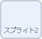
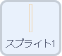
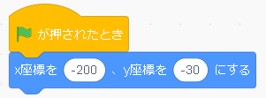
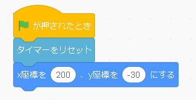
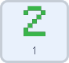
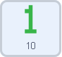
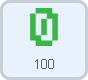
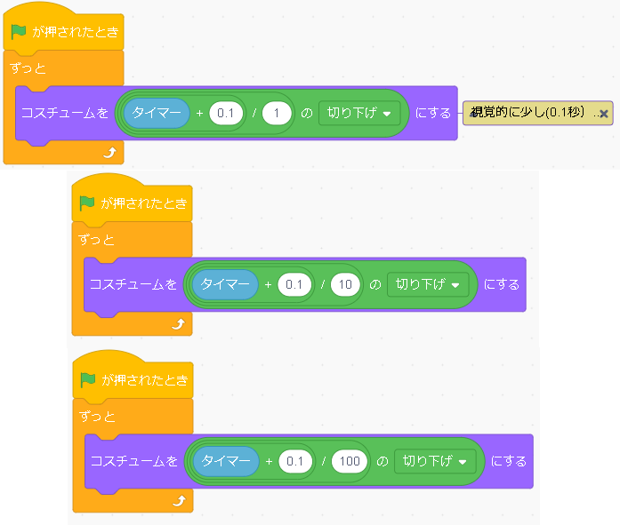
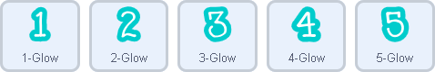
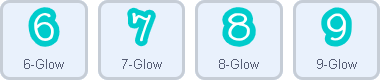

公倍数・約分のビジュアル化

1からの数字の約数、公倍数がアニメーションでわかる面白いプログラムです。見方は、緑の数字を公倍数とする数字たちは同時にオレンジのバーに到達するようになっています。
プログラムするスプライト  |
|
|  | 1.黄色とオレンジのバーのプログラム 上が黄色のバー、下がオレンジのバーのプログラムです。まず、数字のスタート位置、ゴール位置である、オレンジと黄色のバーを設置します。このバーの位置は重要なので、必ずこの座標にします。 黄色バーの中心からオレンジバーの中心の距離を400にすることで、 数字を動かすときの計算が楽になります。 また、オレンジのバーには、毎回旗が押されたとき、 このプログラムではスタートしてからの時間を計測するので（右上の緑の数字） そのタイマーがリセットされるようにします。 |
プログラムするスプライト   |
|
|  | ２．カウンター
次に緑色の文字で表示されたカウンターです。一秒ごとに数字が一ずつ増えています。
scratchには、実行されてからの時間を秒単位で計るブロックがあります。
それを利用します。
上から一の位、十の位、百の位、それぞれのスプライトにプログラムされています。また、それぞれのスプライトに、１～９のコスチュームが用意されています。 まず、一の位から見ていきます。先ほどでてきた、実行されてから時間を測るブロックは［タイマー］と書かれているものです。一の位は、タイマーの一の位の部分をずっと表示しなければいけません。１０秒、１００秒のようにどんどん増えていったときでも一の位だけを表示させたいときは、時間から１を割ります。 |
プログラムするスプライト  |
|